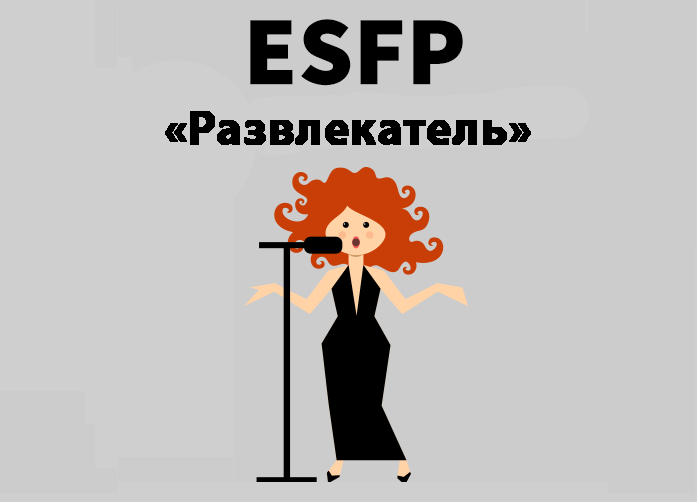

Развлекатель – еще один тип характера. Представители данного вида характера — врожденные артисты, получающие истинное удовольствие, преподнося сюрпризы и забавляя людей. Гостеприимные и дружественные люди, они обычно радостны и разговорчивы, развлекатели ко всем причисляются с подобным восторгом. Маневренные и веселые, развлекатели предпочитают находиться посередке всеобщего внимания, окруженные таковыми же беззаботными, неунывающе настроенными и чуткими людьми, смеясь, собеседуя или принимая участие в корпоративных развлечениях. Данный характер, обычно, располагает гигантским азартом и энтузиазмом, коммуникабельный и непринужденный, развлекатели свободно меняют род занятий, считая непосильной задачей продолжить инициированное и погрузить его до конца.
Реалистичные и практические люди, они настолько прикованы к делу, которым занимаются в настоящее время, что могут пострадать от ведомой функции — интуиции, абсолютно не представляя грядущего развития событий не понимая, будто их поступки могут воздействовать на развитие событий. Улавливающие все буквально, развлекатели обретают удовольствие от всего, что дает им жизнь, естественно подмечая исключительно красоту окружающего мира, боготворят заполнять свои дома, кабинеты и машины предметами, недалёкими к природе или создающими уют: мягкими по фактуре, наглядно разукрашенными и сладковато пахнущими.
Они гордятся своей наружностью и частенько тратят много времени и энергии ради сопровождения своего вида. Развлекатели живут полной жизнью, каждый момент, который занят одним из множества их интересов и хобби, сменяющих друг друга с гигантской скоростью. Из-за того, что этот характер живет исключительно теперешним днем, не стараясь проектировать что-нибудь предварительно‚ они ежеминутно могут очутиться в растерянности. Не хотя выпускать ни одного события, развлекатели устанавливают перед собой такое обилие задач, что принятие заключений становится затруднительным. В то же время этот характер просто не в состоянии сфокусироваться на каком-нибудь одном деле. Ежеминутно опаздывая или забывая про назначенные встречи, из-за внушительной интенсивности жизни, данный вид характера чувствует себя безгранично виноватым, осознав, что непреднамеренно подвел кого-то.
Бескорыстные и постоянно готовые орудовать в угоду окружающим, они представляют собой превосходных приятелей и отличных компаньонов. Представители этого варианта характера — пытливые люди, воспринимающие жизнь такой, какая она есть, и редко образующие предвзятое мнение о чем-либо. Непрезентабельные и простодушные, развлекатели бесконечно впечатлительно относятся к ощущениям окружающих, обычно улавливая близко к сердцу критику и отказы. Впрочем, данные люди в основном открыты и экспрессивны, развлекатели держат около себя свои самые заповедные идеи и чувства, очень тщательно выбирая людей, с какими могут данными мыслями поделиться. Из-за того, что представители данного типа характера не боготворят споров и конфликтов, развлекатели очень редко становятся организаторами ссоры, естественно избегая властных и равнодушных людей. Постоянно готовые прийти на поддержку другим, они получают большое удовольствие, узнав, что их усилия не пропали даром, увидев или услышав, что их попытки положительно посодействовали человеку, пребывающему в беде.
Предрасположенные к сочувствию и состраданию, они могут разочаровываться в людях, естественно подмечая исключительно наилучшие свойства окружающих. также могут воспринимать трудности других чрезвычайно близко к сердцу и тяжело испытывать попытки разрыва нездоровых взаимоотношений. Из-за того, что этот характер редко расценивает свои поступки объективно, вместо полного доверия к своим ощущениям и опыту развлекатели подвергают себя риску очутиться поставленными в тупик или далее быть обманутыми. Необходимый баланс между сердцем и разумом - вот задача, стоящая перед многими представителями данного типа характера задача, какая стоит того, чтобы израсходовать для нее всю жизнь.